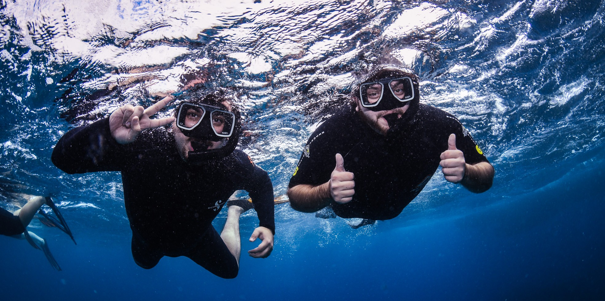
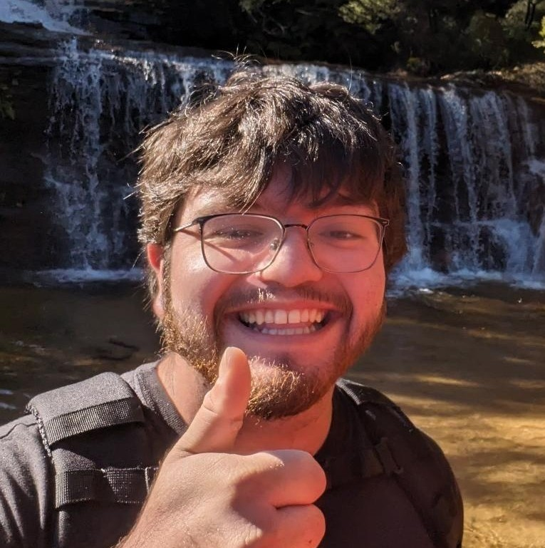

I can write a million things to describe myself right off the bat, but maybe my favorite animated movie quote can sum up a lot about how I think...
"I heard this story about a fish. He swims up to this older fish and says, 'I’m trying to find this thing they call the ocean.' 'The ocean?' says the older fish, 'That’s what you’re in right now.' 'This,' says the young fish, 'this is water. What I want is the ocean.'" – Dorothea Williams (Soul 2020)
If that didn't help, hopefully the rest can help you get to know me better :-)
After graduation from UC Merced, I am planning to enter the environmental sciences field, leveraging my knowledge as a chemist to support work focused on hazardous waste and management. This interest flourished over the course of my last two academic years with my participation in computational research focused on discovering novel alloys to replace current water pipe infrastructure alloys and my environmental analytical research on UC Merced's academic buildings' water quality. I plan to keep my skillsets within the Central Valley to preserve local communities' health by protecting active water wells, agricultural farms, and wildlife ecosystems from industrial and residential pollution by upholding EPA regulations. My journey to eventually become an environmental specialist has yet to begun, but I cannot wait to see what the future has in store.


B.S. Chemistry
University of California, Merced
5200 N Lake Rd
Merced, CA
United States of America